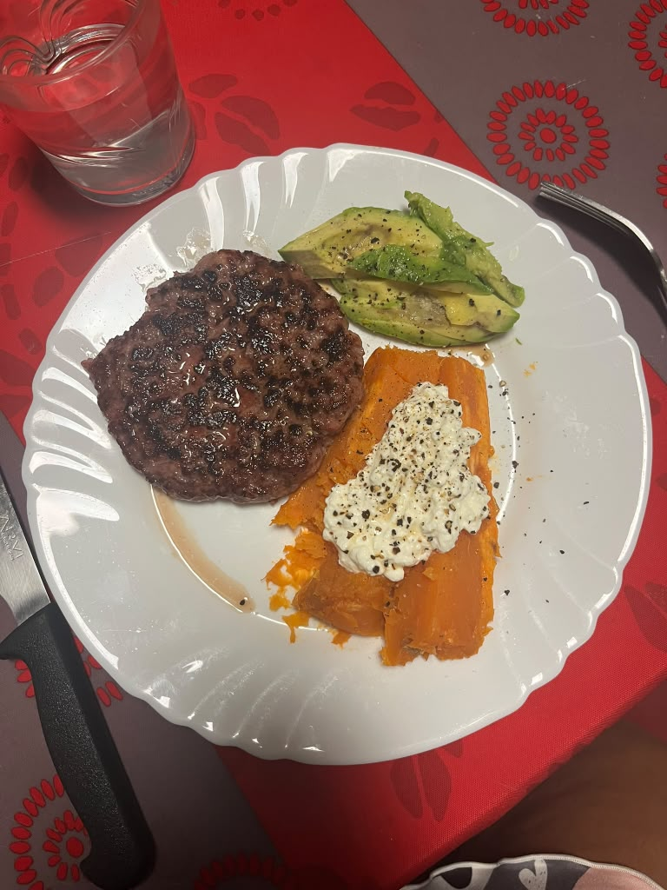
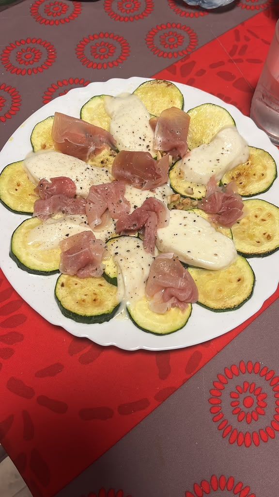
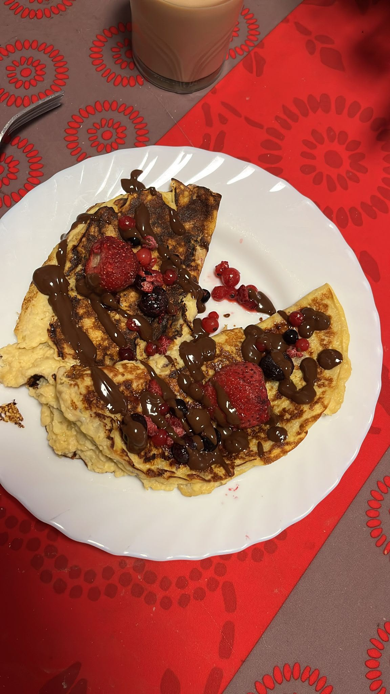

45 minPlatos principales
Hamburguesa de ternera con boniato y aguacate
Boniato dulce, aguacate y un toque cremoso de cottage.
Ver recetaDE MI COCINA A TU MESA
Recetas fit, caseras y sin complicaciones.
Ideas que preparo en casa y que hoy comparto contigo.
Ingredientes sencillos.
Platos para disfrutar cada día.

Hecho en casa
Con ingredientes de siempre
Para comer a gusto
EL RECETARIO
Un plato principal, algo para compartir
o ese capricho dulce para terminar.

45 minPlatos principales
Boniato dulce, aguacate y un toque cremoso de cottage.
Ver receta
20 minPara compartir
Un plato para el centro de la mesa, con mozzarella fundida.
Ver receta45 minPlatos principales
Perejil, boniato al horno y una ensalada fresca de rúcula.
Ver receta
15 minAlgo dulce
Plátano y huevo, con frutos del bosque y salsa de chocolate.
Ver recetaDETRÁS DE CÁMARAS
Nunca me había planteado crear una página de recetas. Simplemente empecé a guardar las comidas que más repetía entre semana y pensé que podía ser útil tenerlas todas juntas.
La mayoría son recetas que hago cuando llego cansada a casa, quiero comer bien y no me apetece pasar una hora cocinando.
Las cantidades y los tiempos son orientativos. Adáptalos a tus gustos, al tamaño de los ingredientes y a tu cocina.